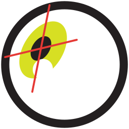

CalibrationChoose the display the subject looks at (or move this window to it), then press Calibrate. The targets go full screen. The subject looks at the center of each target. Press Esc to stop.
This uses the Remote Linear calibration (by Ryan Ressmeyer): a linear fit from the eye signal (pupil minus corneal reflection, by default) to the target positions in degrees.